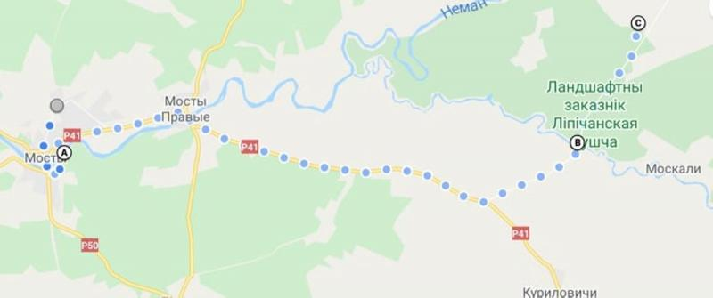

Маршрут
Маршрут удобен тем, что от старта в Гродно и от конечной точки в Скрибовцах едем на поезде.
А между – удивительной красоты природа и старинная архитектура дворянских усадебных домов,
смешанная с горечью их запустения.
Что можно увидеть на маршруте, день один
Маршрут. 1 день. Гродно – г. Мосты – д. Мальковичи – Щара –Липичанская пуща – д. Стукалы –
Лысая
гора – Обсох.
Длина маршрута 45 километров.

Мосты. Первое, что стоит посмотреть в Мостах – самый длинный в Беларуси пешеходный
мост
через Неман. Его длина 193,3 метра, ширина – полтора метра. Был построен почти полвека
назад. Неман в этих местах широкий и полноводный, с моста видно, как впадает в него речка
Зельвянка. Говорят, что мост собирали на льду и со льда поднимали в воздух, фиксируя на
мачтах. До реконструкции в 1990-х мост раскачивался, но его укрепили стальными тросами, и
аттракцион исчез. Да и Неман в последние годы не замерзает.
Правые Мосты и имение Ознобишиных (XIX век). Ознобишины – коренные тамбовские
дворяне,
купили имение в 1871 году и владели им до 1920 года. От шикарного сада ничего не осталось, а
здание сохранилось, правда, пережило жесткую реконструкцию. Сейчас там находится дом
престарелых, раньше здесь опекали душевнобольных.
Мальковичи. В деревне можно сделать остановку, купить продукты в магазине.
Липичанская пуща, междуречье Нёмана и Щары. Грабы, клёны, чёрная ольха, дубы, чёрная
береза
– леса покрывают материковые дюны или «эоловые холмы».
Природа. Пуща – среда обитания краснокнижных растений, там встречаются: живучка
пирамидальная, зубянка клубненосная, пололепестник зеленый, шпажник черепитчатый,
пальчатокоренник майский, баранец обыкновенный, касатик сибирский, чина льнолистная и так
далее. Редкие насекомые: жужелица решетчатая, блестящая, шагреневая и фиолетовая, весенний
навозник, медведица-хозяйка, моховой шмель. В пуще можно увидеть серого журавля, чёрного
аиста, большого крохоля, белохвостого орлана, воробьиного сыча. Краснокнижники
млекопитающие: барсук и орешниковая соня.
Свято-Троицкая Щарская криница с купелью. Говорят, вода в ней исцеляет от многих
болезней.
Старая дегтярня: недалеко от криницы сохранились дубовые бочки, вкопанные в землю,
между
ними подземные туннели.
Партизанская деревня. Во время 2-й мировой войны в пуще базировалась целая
партизанская
армия со своим генералом, а сейчас в деревне Шимки открыт мемориал с музеем-землянкой.
Стукаловская дубрава. В дубраве возле деревни Стукалы возраст деревья возрастом
примерно 250
лет.
Урочище «Обсох» (место слияния Щары с Неманом), здесь находится одна из самых
больших дубрав
в
Беларуси, она занимает около 34 гектаров. Деревья такие мощные, что внизу практически нет
подлеска. Возраст их около 200 лет. Вдоль реки Щара встречаются и трехсотлетние великаны,
диаметр отдельных деревьев почти четыре метра.
Лысая гора. Самое высокое место в Липичанской пуще, внизу Неман делает свою
знаменитую
двухкилометровую петлю. Паводки подмывают песчаные берега, поэтому гору назвали Лысой. При
содействии посольства Германии в 2018 году на горе оборудована с туристическая стоянка,
можно
остаться на ночлег и даже договориться с баней в деревне Шимки.
Что можно увидеть на маршруте, день два
Маршрут: Липичанская пуща – Зачепичи – Орля – Желудок – Мураванка – Станция Скрибовцы.
Длина маршрута 55 километров
Зачепичи. Музей партизанской славы в восстановленной землянке.
Орля. Храм Покрова Пресвятой Богородицы, 1867 год. Архитектурный стиль храма типичен
для
западной Беларуси – так называемая муравьевка по проекту генерал-губернатора Муравьева.
Желудок. Конечно, нельзя проехать мимо главной достопримечательности этого небольшого
посёлка –
дворцово-паркового комплекса Святополк-Четвертинских. Дворец построен в стиле необарокко, в
последние годы там идет реконструкция. Поместье называлось «Желудокский ключ» с 1907 до 1939
года, и там кроме дворца построили винокурню, мельницу, паровую лесопилку, речную пристань
на
Немане, две электростанции, а также больницу на 40 коек, четыре школы,10 магазинов
колониальных
товаров, 10 магазинов потребительских товаров, табачную лавку, несколько ресторанов. Сегодня
зайти на территорию можно за четыре рубля по требованию.
Костел Вознесения Пресвятой Девы Марии — памятник архитектуры в стиле позднего
классицизма,
построен в 1853 году.
Фестиваль цветов. Каждый год проходит в августе в Желудке.
Мурованка.Церковь Рождества Богородицы (известная также как Маломожейковская
церковь) в деревне
Мурованка возводилась между 1516 и 1524 годами. Церковь относится к храмам оборонного типа.
В
Беларуси есть только два таких памятника оборонительного зодчества готично-ренессансного
стиля,
второй находится в Сынковичах.
От Мурованки недалеко до железнодорожной станции Скрибовцы, откуда можно уехать в Гродно.
Так под колесами велосипедов остались два дня лесных дорог и деревенской экзотики.